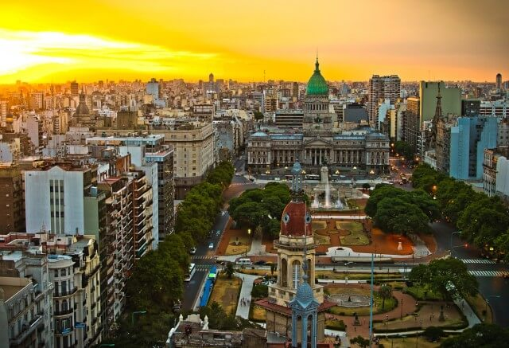
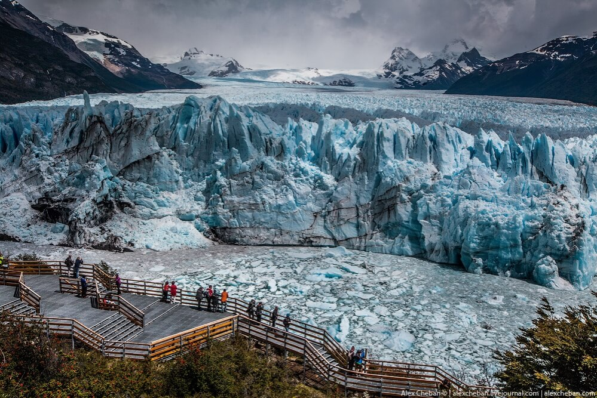
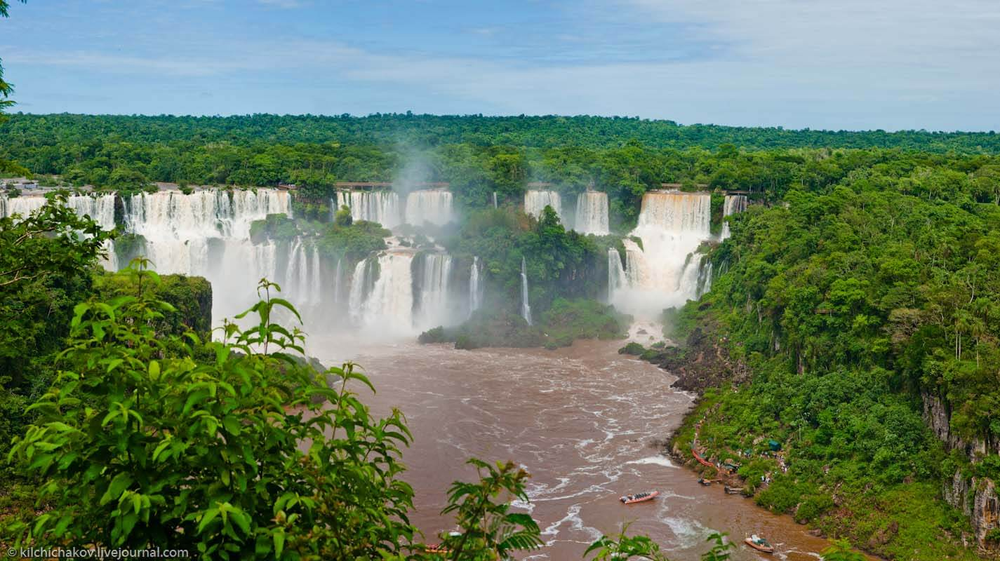
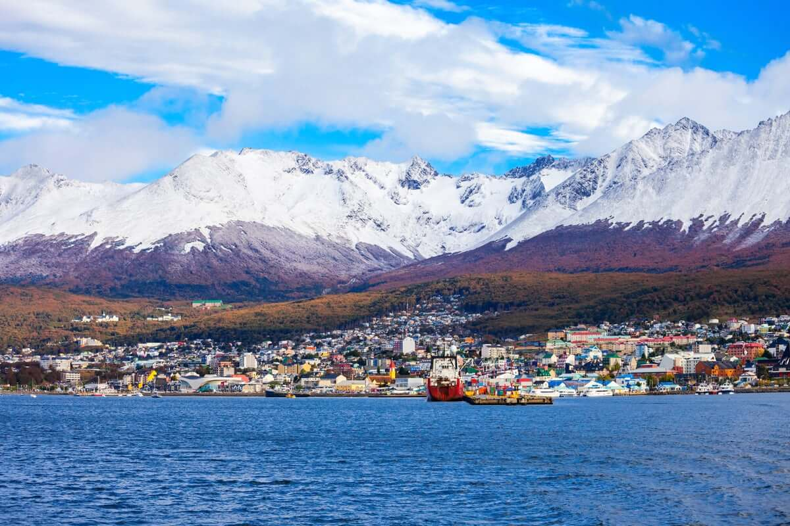
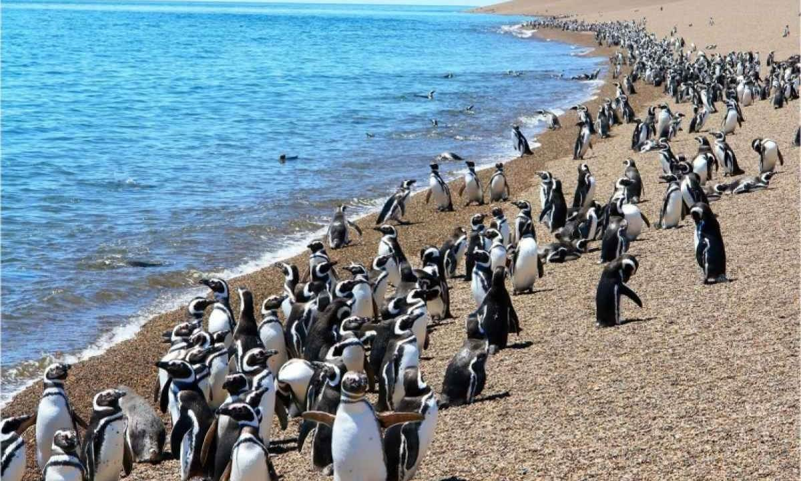

Аргентина
Аргенти́на, офіційно Аргенти́нська Респу́бліка — держава в Південній Америці, що займає південно-східну частину материка, східну частину о. Вогняна Земля і низку островів у південній Атлантиці. Межує на півдні й заході з Чилі, на північному заході з Болівією, на сході з Парагваєм, Бразилією, Уругваєм і омивається Атлантичним океаном. Площа 2 780 092 км². За переписом 2010 року населення Аргентини становить 40 091 359 осіб. Орієнтовна кількість жителів на 2016 рік 43 847 430 Столиця — Буенос-Айрес. Офіційна мова — іспанська. Грошова одиниця — аргентинський песо.
Буенос-Айрес

Традиційно рекомендуємо почати знайомство з країною з її прекрасної столиці -
Буенос-Айреса. Це місто є міксом із сучасних будівель і історичних місць. Для того,
щоб зануритися в ритмічне життя ділового міста відвідай квартал Пуерто-Мадеро, якщо
ж ти налаштована на неспішну прогулянку старовинними площами вирушай на площу Травня.
Звідти відкривається прекрасний вид. Ти побачиш Рожевий палац, з балкона якого виступала
Евіта Перон, також тут знайдеш ратушу і головний собор. Також саме звідси починається
найширша у світі 20-смугова Вулиця 9 травня. Зазирни обов'язково в квартал Ла-Бока,
названий батьківщиною танго, проспект Авеніда де Майо (на цьому проспекті розташовані
дві кав'ярні, які є символами Буенос-Айреса: кав'ярня "36 Більярд" і кав'ярня "Тортона"),
Японський сад, подарований Аргентині імператором Японії
1967 року; Кладовище Реколета, бруковані вулички, антикварні магазинчики, кав'ярні та
художні студії й Музей сучасного мистецтва в районі Сан-Тельмо;
Якщо тобі подобається годинами розглядати найрізноманітніші будівлі і
споруди, обов'язково пройдися до офіційної резиденції президента Каса-Росада,
оціни палац Національного конгресу Аргентини, полюбуйся Англійською вежею, тебе
неодмінно здивують театр Колон, книжковий магазин "Ель Атенео Гранд Сплендид",
палац Бароло і кладовище Реколета.
Льодовик Періто Морено
Головний вузол для туристів, які відвідують Всесвітню спадщину ЮНЕСКО в Патагонії Національний парк Лос-Glaciares, маленьке містечко Росії Ель Калафате пропонує безліч варіантів розміщення та інші зручності для відвідувачів. Саме тут більшість відвідувачів приєднуються до екскурсій, щоб побачити популярні льодовики парку, зокрема чудовий льодовик Періто-Морено, величезний льодовиковий період на 30 кілометрів (і третій за величиною заповідник у світі) всього за 78 км від центру міста. Названий після дослідника 19-го століття, це всього лише двогодинна поїздка з Ель-Калафате до великого центру відвідувань льодовика, а звідси лише коротка прогулянка до льодовика вздовж веселої ходьби. Для тих, хто хоче піднятися на льодовик, доступні екскурсії на льодових походах, які варіюються від години ходьби над льодовиком до більш довгих п'ятигодинних екскурсій. Ще однією важливою особливістю Національного парку Лос-Глеаярес є висота 3550 метрів Монте Фітц Рой, потрясающе красива гора, що перетинає кордон з Чилі, що важко піднятися, ніж Еверест.
Ігуасу-Фолс

Приголомшливий водоспад Ігуасу лежить уздовж кордону Аргентини з Бразилією,
з національним парком Ігуасу на аргентинській стороні та національним парком Ігуасу
на бразильській стороні. Охоронювані як об'єкти Всесвітньої спадщини ЮНЕСКО, ці
величезні водоспади безсумнівно є одними з найбільш вражаючих визначних пам'яток
Південної Америки. Відвідувачі можуть зовсім поруч зіткнутися з цими громовими
падіннями, завдяки мережі легкодоступних доріжок і оглядальних майданчиків,
призначених для забезпечення кращих можливих поглядів, в тому числі на нижній
частині водоспаду, області, відомої як "Диявольський горло".
Ігуасу насправді складається від 150 до 300 окремих падінь вздовж його майже
три кілометрового краю, число, яке змінюється в залежності від сезону, змінюється в
висоту від 60 до 82 метрів, і кожен з них як вражаючий, як і наступний. Обслуговує
міжнародний аеропорт в Аргентині (і один у сусідній Бразилії), це порівняно легко
відвідувати, особливо якщо літати з Буенос-Айреса.
Ушуая: кінець світу
На південному кінці Аргентини Патагонія славиться своїми вражаючими пейзажами: драматичною сумішшю Анд та довгими рівнинами і плоскогір'ями. Більшість пригод тут починаються Ушуая, найпівденніший у світі місто. На початку 20-го сторіччя створений як колонія вигнання, і тепер це популярний пункт для поїздок до Антарктиди або навколо Капський Горн, це місто на Бігловий канал оточений унікальним ландшафтом гір, моря, льодовиків та лісів на краю Національний парк Tierra del Fuego з його вражаючими пейзажами та різноманітною флорою та фауною. Популярні визначні пам'ятки включають в себе Сан-Хуан-де-Салваменто Маяк - також відомий як кінець світу маяк - побудований в 1884 році в Ісла-де-лос-Індійський; в Кінець Всесвітнього Музею з його експонатами, що стосуються природної історії регіону, корінного життя та ранніх виправних колоній; і Морський музей Ушуайи, розташована в горезвісній колишній військовій в'язниці міста, і варто відвідати його численні морські артефакти та масштабні моделі таких відомих кораблів, як Дарвін Бігль.
Пуерто-Мадрин і півострів Вальдес

Місто Пуерто-Мадрін лежить на березі Голфо Нуево в одному з найбільш захищених
місць на узбережжі Патаґонії. Заснована валлійськими поселенцями в 1886 році,
глибоководний порт міста та численні природні заповідники роблять його одним з
найпопулярніших напрямків круїзів в Аргентині, а його міцна берегова лінія також
приваблює ентузіастів водного спорту, зокрема, віндсерферів, котрі насолоджуються
сильним патрагонським вітром. Основні моменти включають в себе Природничі науки та
океанографічний музей, в прекрасному будинку з видом на гавань, де розміщуються
численні прояви патагонського флори та фауни, включаючи кістяк китів та захоплюючу
експозицію про гігантських кальмарів.
Для любителів природи велика нічия Вальдес
півострів, важливий природний заповідник, який входить до списку Всесвітньої спадщини
ЮНЕСКО за різноманітною природою. Екскурсії по заповіднику є обов'язковими, і
відвідувачі, як правило, від'їжджають, побачившись усім від правильних китів
(тут для матерів і телят), разом із тюленями слонів, морськими левами та орками.
Це також важлива ділянка для мігруючих берегових птахів, зокрема магелланових пінгвінів.
Корисні посилання
- Іспанія
- Франція
- Канада
- Австралія
- Бразилія
- Аргентина
- Італія
- Індія
- ПАР
- Індонезія